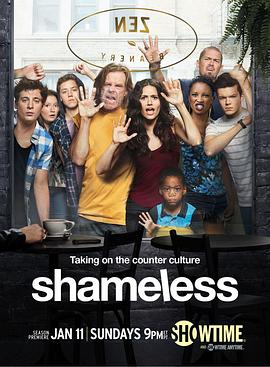

无耻之徒(美版) 第五季 / Shameless Season 5
又名：无耻
作品信息
| 导演 | 萨娜·哈姆里 / 亚历克斯·格雷夫斯 / 克里斯托弗·查莱克 / Richie Keen / Anthony Hemingway |
| 编剧 | 保罗·艾伯特 / 约翰·威尔斯 / Krista Vernoff / Sheila Callaghan / Etan Frankel |
| 主演 | 威廉·H·梅西 / 埃米·罗森 / 杰瑞米·艾伦·怀特 / 伊森·卡特科斯基 / 卡梅隆·莫纳汉 / 史蒂夫·豪威 / 珊诺拉·汉普顿 / 艾玛·肯尼 / 妮可拉·布鲁姆 / 马修·博兰 / 艾米莉·贝吉尔 / 琼·库萨克 / 德蒙特·莫罗尼 / 诺尔·费舍 / 迈克尔·帕特里克·麦克吉尔 / 亚当凯格瑞 / 杰里米·杰克逊 / 史蒂夫·卡兹 |
| 类型 | 剧情 / 喜剧 |
| 制片国家/地区 | 美国 |
| 语言 | 英语 |
| 首播 | 2015-01-11(美国) |
| 季数 | 5 |
| 集数 | 12 |
| 单集片长 | 46分钟 |
| IMDb | tt3547068 |
最后一次看到是 2026-08-12T21:11:26+08:00 · 豆瓣原页